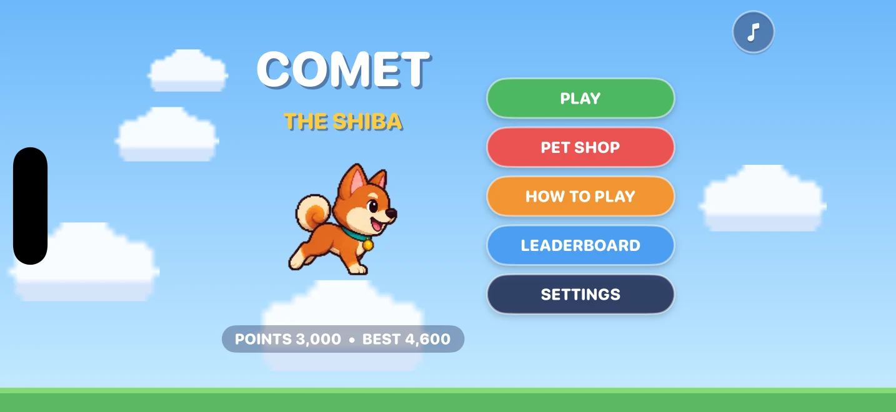
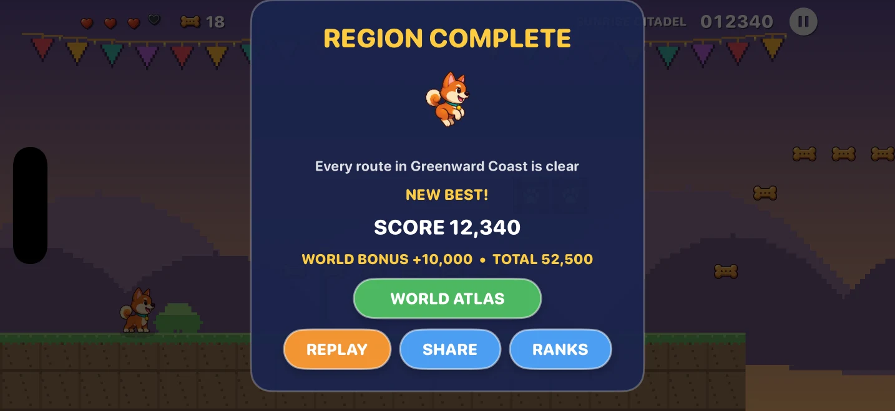
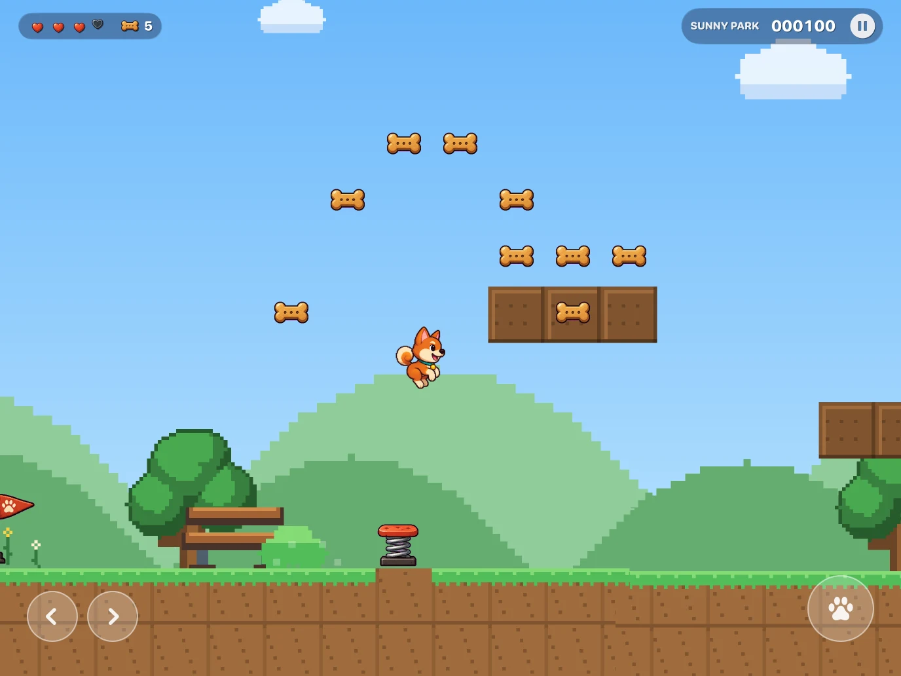

Press kit
Comet the Shiba
Everything you need to write about, evaluate, or publish the game. Assets are free to use for coverage.
Fact sheet
| Title | Comet the Shiba |
|---|---|
| Developer | Barqawiz — solo developer |
| Platforms | iPhone and iPad · iOS 17+ · landscape · universal |
| Status | Feature complete, unreleased |
| Release date | To be announced |
| Price | To be announced |
| Engine | Swift + SpriteKit with a custom fixed-timestep AABB physics loop running at 120 Hz. SpriteKit's own physics engine is not used. |
| Content | 30 levels · 3 regions · 3 boss duels · 5 playable dogs · Game Center leaderboard and 6 achievements |
| Monetization | None. No ads, no in-app purchases, no third-party SDKs. |
| Privacy | Data Not Collected. Progress is stored on device. |
| Languages | English |
| Input | Touch, and full hardware keyboard support when one is attached |
| Contact | barqawicloud@icloud.com |
For publishers
The game is finished and has never been released, which keeps every publishing route open — including the ones that require an unreleased title.
A TestFlight build is available on request. It boots straight into gameplay: no account, no onboarding wall, no login.
Open to conversations about launch, marketing, user acquisition, and a funded Android port.
Downloads
{kind=link}
{kind=link}
Descriptions
One line
An original handcrafted arcade platformer for iPhone and iPad: thirty levels, three regions, three boss duels and five playable dogs.
Paragraph
Comet the Shiba is a run-and-jump arcade platformer built for touch. Thirty handcrafted levels span three regions — a coastal park, a desert highland and a frozen starfall — each introducing its own hazards and ending in a duel with a Warden that has to be baited, barked at and stomped rather than out-damaged. Underneath is a custom fixed-timestep engine with coyote time, jump buffering, variable jump height and chained stomp combos, so the jump feels identical on every device. Every character, tile, sound and music cue is original. There are no ads, no in-app purchases and no third-party SDKs.
Long
Comet wants to get home. That is the whole story, and it is enough: thirty handcrafted levels stand between a Shiba Inu and her doghouse, and each one is built around a small number of honest ideas — a gap you can just clear, a pest you can bounce off, a plank that will not hold you for long.
The three regions escalate without discarding anything. Greenward Coast teaches springs, crumble planks, hoppers and spikeshells across sunny parks and moonlit caves. Amber Highlands adds tumbleweeds that roll under real gravity and duneswoopers that dive at where you are standing, then starts erupting the ground beneath you. Starfall Reach layers star-crystal shardlings that are only safe to stomp while dark, and glimmermoths that drift toward you and settle just above head height — over frost versions of every hazard that came before.
Each region ends at a gate held by a Warden. The duel is a read rather than a damage race: stand your ground, let the charge commit, and bark to trip it — or sidestep and let it slam into the arena wall — then stomp its head while it is stunned.
Four more dogs wait in the pet shop, bought with points earned by playing rather than money. Their prices total exactly 120,000, which is precisely what a perfect save holds, so the full roster only ever lands on a player who cleared everything.
Key features
- Thirty handcrafted levels across three regions, all shipping in the first release, ending at the Starfall Citadel.
- Three boss duels built around a bark-and-trip read instead of a damage race.
- Five playable dogs — Comet, Scout, Nova, Pogo and Rook — unlocked with points, identical in physics, different in personality.
- Arcade feel by design: coyote time, jump buffering, variable jump height, chained stomps worth up to 800, and a Zoomies invincibility dash.
- Hazards that telegraph: planks shake before they break, geysers hiss before they erupt, shardlings shimmer before they flare.
- Built for the device: landscape touch controls, a dedicated iPad layout, and hardware keyboard support.
- Clean by construction: no ads, no in-app purchases, no third-party SDKs, and no data collection.
Credits
- Design, code, art direction and audio — Barqawiz, solo.
- Art — character, world, boss, fauna and starfall art generated from original design masters held in the project.
- Third-party assets — none. No middleware, engines or SDKs beyond Apple's own frameworks.
Permission to use
Press and publishers are welcome to use every screenshot, capture and logo on this site for coverage or evaluation of Comet the Shiba.
Screenshots
Every image below links to the full-resolution capture — 2868 × 1320 on iPhone, 2752 × 2064 on iPad. All are landscape, matching the game.


{kind=link}

{kind=link}


{kind=link}

Gameplay captures
Silent, uncut captures from the build — one per playable dog. Right-click to save.